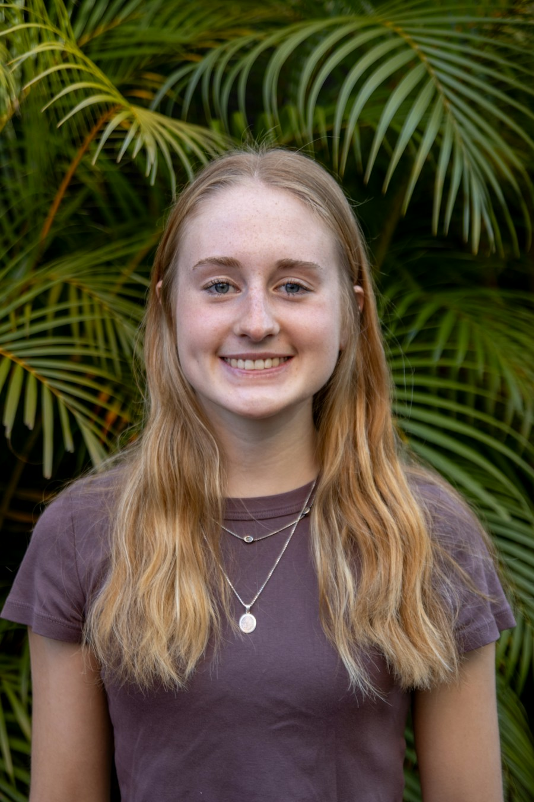
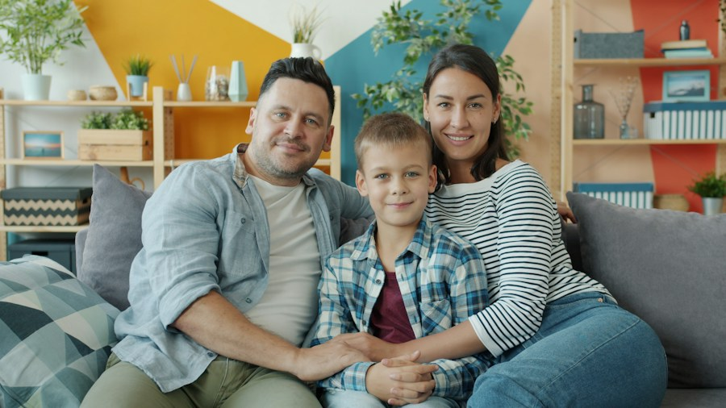

Terapia individual
Un espacio propio para trabajar lo que te preocupa: ansiedad, estrés, estado de ánimo, vínculos.
Distintos tipos de acompañamiento según tu momento de vida. Toda la atención es 100% online, por videollamada.
Un espacio propio para trabajar lo que te preocupa: ansiedad, estrés, estado de ánimo, vínculos.

Atención a partir de los 16 años, con un enfoque cercano y adaptado a esta etapa.

Sesiones para mejorar la comunicación y atravesar conflictos o cambios juntos.
Acompañamiento para elegir carrera, oficio o un nuevo rumbo laboral.
Un espacio de contención para transitar pérdidas y despedidas.
Un primer encuentro para conocerte, entender qué buscás y orientarte con el profesional adecuado.
Trabajamos con las principales obras sociales y prepagas. También podés atenderte de forma particular.
Cargá tu número de credencial al pedir el turno. Si tu obra social pide orden médica, la subís en Mi espacio.
Consultanos si tu plan cubre las sesiones y cuántas por año.
Aranceles accesibles. Pagás por transferencia o con tarjeta antes de la sesión.
Las sesiones duran aproximadamente 50 minutos y son todas por videollamada.
No. Mentendes es un centro 100% online: todas las sesiones son por videollamada, así podés atenderte desde donde estés.
Sí, por el chat privado de Mi espacio. El chat funciona solo en el horario de atención de tu profesional (lo ves en su ficha). Fuera de ese horario no se pueden enviar mensajes y se habilita de nuevo al día siguiente. El chat no es para urgencias: en ese caso llamá al 135 o andá a la guardia más cercana.
Un celular o computadora con cámara, conexión a internet y un lugar tranquilo. El enlace lo encontrás en Mi espacio.
Sí. Si necesitás ayuda para usar la página o pedir el turno, un familiar o acompañante puede hacerlo con vos.
No tenés que crear una cuenta. Cuando tu profesional confirma tu primer turno, te envía por correo y por mensaje tu usuario (tu DNI), una contraseña temporal y el enlace de la videollamada. La primera vez que ingresás a Mi espacio, creás tu propia contraseña. Si te la olvidás, tu profesional te puede enviar una nueva contraseña temporal.
Sí. Lo que compartís en sesión y las devoluciones de tu profesional son privadas. Solo vos podés verlas, después de verificar tu identidad.